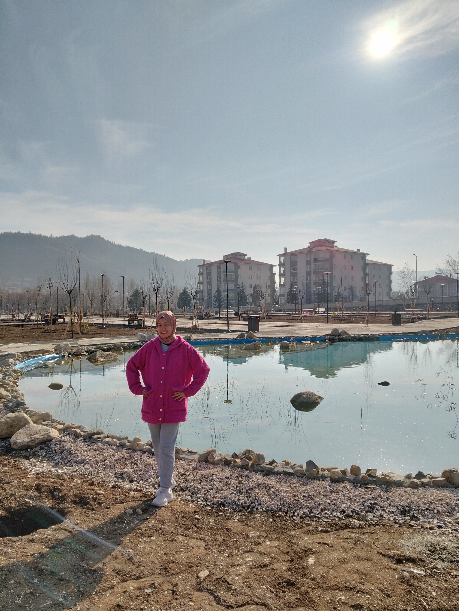

Merhaba!İsmim Zeliha Teker. Ankara'da doğdum. 19 yaşındayım. Ankara Üniversite'si Nallıhan MYO'da Bilgisayar Programcılığı birinci sınıf öğrencisiyim.
| Okul Adı | Yıl | Mezun Notu |
|---|---|---|
| Faik Erbağı İlkokulu | 2012-2016 | 100 |
| Ahmet Cevdet Paşa Ortaokulu | 2016-2020 | >92,5 |
| Bekir Gökdağ Anadolu Lisesi | 2020-2024 | 80,00 |
| Ankara Üniversitesi Nallıhan MYO | 2024-okuyor | okumakta |
"Başarı, zorluklarla yüzleşip onları aşabilme yeteneğidir."